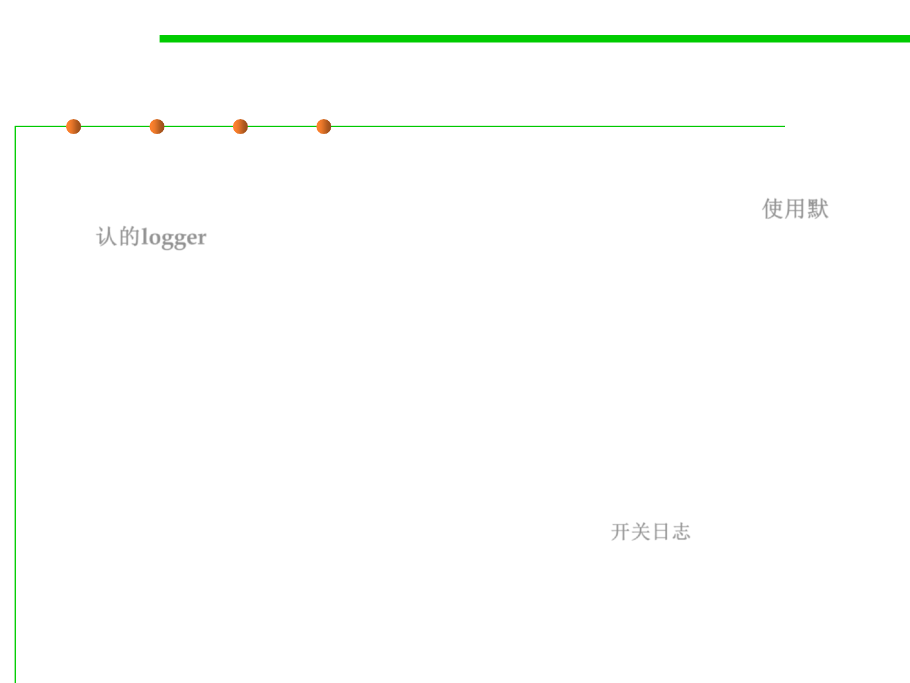

java.util.logging: Logger
7.4 Debugging
▪ Basic Logging
– For simple logging, use the global logger and call its info method: 使用默
认的logger
import java.util.logging.*;
Logger.getGlobal().info("File->Open menu item selected");
Results:
May 10, 2013 10:12:15 PM LoggingImageViewer fileOpen
INFO: File->Open menu item selected
– You can call the below code at an appropriate place (such as the
beginning of main), then all logging is suppressed 开关日志
Logger.getGlobal().setLevel(Level.OFF);